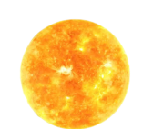

Sistemas

Sistemas de estrelas são compostos por duas ou mais estrelas orbitando um centro comum. O Sistema Solar é um exemplo de sistema estelar com oito planetas orbitando o Sol.

Astro Mind
1
2
3
A astronomia é a ciência que estuda os corpos celestes e os fenômenos que
ocorrem no universo. Ela nos ajuda a entender a origem e evolução do cosmos.
A astronomia nos permite responder a grandes questões: onde estamos, de onde viemos e para onde vamos. E o saciar da curiosidade inerente à espécie humana de entender o Universo produz também conhecimento básico para a descoberta de tecnologias e serviços essenciais em nosso dia a dia.
.png)
Astronomia é uma área em constante evolução, que requer instrumentos poderosos para observar locais jamais vistos antes e entender a evolução do universo. Além de telescópios que capturam diferentes partes do espectro eletromagnético, a inteligência artificial e outros recursos tecnológicos são cada vez mais utilizados para expandir os limites da astronomia e da ciência espacial.
Entendemos que o seu tempo é valioso, e queremos tornar a navegação em nosso site o mais fácil e eficiente possível. Esperamos que você goste da nossa divisão de conteúdo em páginas separadas tornando a navegação mais rápida e agradável.
A astronomia é uma ciência fascinante que tem sido estudada por muitos anos e tem feito importantes descobertas sobre o universo. Desde a ideia de que a Terra é redonda até a descoberta do universo em expansão e a existência de buracos negros, a astronomia tem ampliado nossa compreensão do universo e do nosso lugar nele. Nesta página, vamos explorar algumas dessas descobertas científicas e como elas impactam nossa compreensão do universo.
A astronomia é uma ciência fascinante que tem sido objeto de exploração há séculos. Desde o primeiro telescópio de Galileu, os avanços tecnológicos permitiram aos astrônomos estudar o universo com cada vez mais detalhes. Através de telescópios terrestres e espaciais, satélites e sondas, a astronomia nos permitiu mapear o universo visível, estudar a evolução das estrelas e das galáxias, explorar exoplanetas e procurar vida em outras partes do universo.
A tecnologia tem sido crucial para a astronomia, permitindo-nos observar o universo em detalhes sem precedentes. O Telescópio Espacial Hubble e o Telescópio Espacial James Webb são fundamentais na detecção de galáxias distantes e exoplanetas. O Carro Espacial foi importante para o lançamento e manutenção de satélites e construção da Estação Espacial Internacional. Esses avanços tecnológicos têm permitido descobertas impressionantes sobre o universo.
Somos uma equipe formada por 6 pessoas (Saul, Mariana Silva, Ketlyn, Esther, Nicole e Guilherme Alves), temos algumas metas como Desenvolver Habilidades e Competências, Alcançar a Excelência na Qualidade, Fomentar o crescimento pessoal e profissional.
Temos o objetivo de desenvolver um site de astronomia que otimize os estudos e o interesse dos usuários pelo campo da astronomia, fornecendo informações precisas, recursos educacionais interativos e uma comunidade engajada.